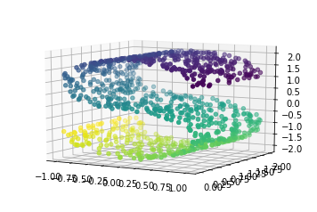
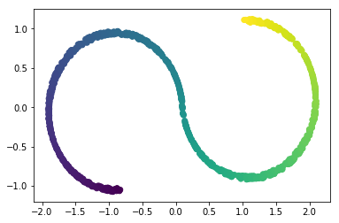
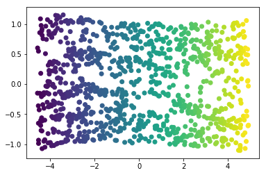
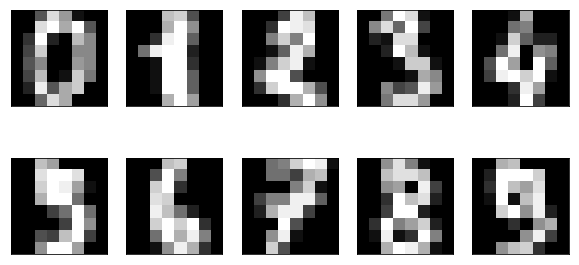
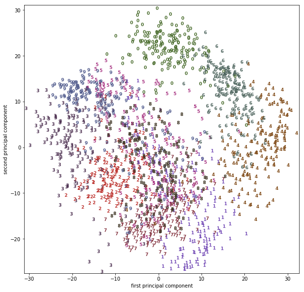
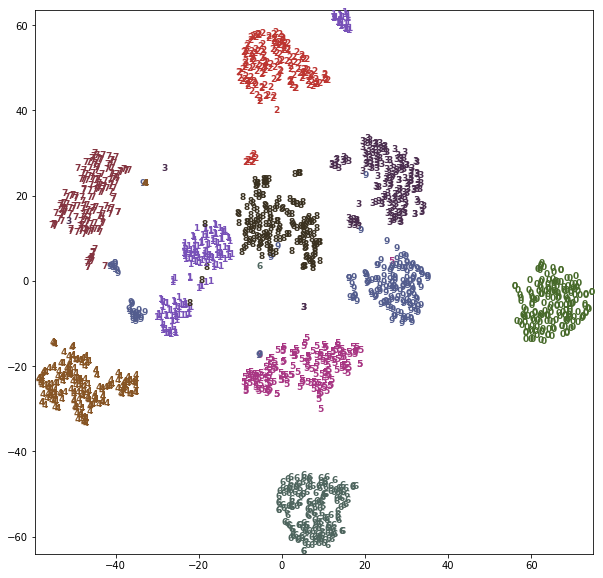

scikit-笔记20:非监督学习-非线性降维
Table of Contents
%matplotlib inline import matplotlib.pyplot as plt import numpy as np
1 Manifold Learning
1.1 PCA vs. Manifold learning
1.1.1 weakness of PCA
One weakness of PCA is that it cannot detect non-linear features. A set of algorithms known as Manifold Learning have been developed to address this deficiency. A canonical dataset used in Manifold learning is the S-curve:
from sklearn.datasets import make_s_curve X, y = make_s_curve(n_samples=1000) from mpl_toolkits.mplot3d import Axes3D ax = plt.axes(projection='3d') ax.scatter3D(X[:, 0], X[:, 1], X[:, 2], c=y) ax.view_init(10, -60);

This is a 2-dimensional dataset embedded in three dimensions, but it is embedded in such a way that PCA cannot discover the underlying data orientation:
from sklearn.decomposition import PCA X_pca = PCA(n_components=2).fit_transform(X) plt.scatter(X_pca[:, 0], X_pca[:, 1], c=y);

1.1.2 Manifold learning: overcome PCA
Manifold learning algorithms, however, available in the sklearn.manifold
submodule, are able to recover the underlying 2-dimensional manifold:
from sklearn.manifold import Isomap iso = Isomap(n_neighbors=15, n_components=2) X_iso = iso.fit_transform(X) plt.scatter(X_iso[:, 0], X_iso[:, 1], c=y);

1.2 Manifold learning on the digits data
1.2.1 preview the digit image
We can apply manifold learning techniques to much higher dimensional datasets, for example the digits data that we saw before:
from sklearn.datasets import load_digits digits = load_digits() fig, axes = plt.subplots(2, 5, figsize=(10, 5), subplot_kw={'xticks':(), 'yticks': ()}) for ax, img in zip(axes.ravel(), digits.images): ax.imshow(img, interpolation="none", cmap="gray")

1.2.2 visualize all digit images after pca mapping
8*8 …….. …….. …….. 1*1 …….. -—pca-—> . -—> draw as one point on 2d image to see …….. whether or not we can separate different digits …….. …….. ……..
We can visualize the dataset using a linear technique, such as PCA. We saw this already provides some intuition about the data:
# build a PCA model pca = PCA(n_components=2) pca.fit(digits.data) # transform the digits data onto the first two principal components digits_pca = pca.transform(digits.data) # setup 10 colors, each color for each digit from 0 ~ 9 colors = ["#476A2A", "#7851B8", "#BD3430", "#4A2D4E", "#875525", "#A83683", "#4E655E", "#853541", "#3A3120","#535D8E"] # setup figsize, x,y limitation plt.figure(figsize=(10, 10)) plt.xlim(digits_pca[:, 0].min(), digits_pca[:, 0].max() + 1) plt.ylim(digits_pca[:, 1].min(), digits_pca[:, 1].max() + 1) # using pca mapping result of each digit image smaple as index; # using label of each digit image as text you want to draw. for i in range(len(digits.data)): # actually plot the digits as text instead of using scatter plt.text(digits_pca[i, 0], #<- the x-axis given by model pca digits_pca[i, 1], #<- the y-axis given by model pca str(digits.target[i]), #<- the digit we want to draw color = colors[digits.target[i]], #<- use the true label(0~9) as index of colors array fontdict={'weight': 'bold', 'size': 9} ) plt.xlabel("first principal component") plt.ylabel("second principal component");

1.2.3 visualize all digit images after T-SNE mapping
Using a more powerful, nonlinear techinque can provide much better visualizations, though. Here, we are using the t-SNE manifold learning method:
from sklearn.manifold import TSNE tsne = TSNE(random_state=42) # use fit_transform instead of fit, as TSNE has no transform method: digits_tsne = tsne.fit_transform(digits.data)
import matplotlib.pyplot as plt import numpy as np from sklearn.manifold import TSNE from sklearn.datasets import load_digits from sklearn.decomposition import PCA from sklearn.datasets import make_s_curve from mpl_toolkits.mplot3d import Axes3D from sklearn.manifold import Isomap X, y = make_s_curve(n_samples=1000) X_pca = PCA(n_components=2).fit_transform(X) iso = Isomap(n_neighbors=15, n_components=2) X_iso = iso.fit_transform(X) # build a PCA model pca = PCA(n_components=2) pca.fit(digits.data) # transform the digits data onto the first two principal components digits_pca = pca.transform(digits.data) colors = ["#476A2A", "#7851B8", "#BD3430", "#4A2D4E", "#875525", "#A83683", "#4E655E", "#853541", "#3A3120","#535D8E"] # build a TSNE obj tsne = TSNE(random_state=42) # use fit_transform instead of fit, as TSNE has no transform method: # get 2d data points after tsne mapping digits_tsne = tsne.fit_transform(digits.data) # set figsize, x,y limitation plt.figure(figsize=(10, 10)) plt.xlim(digits_tsne[:, 0].min(), digits_tsne[:, 0].max() + 1) plt.ylim(digits_tsne[:, 1].min(), digits_tsne[:, 1].max() + 1) # using tsne mapping result of each digit image smaple as index; # using label of each digit image as text you want to draw. for i in range(len(digits.data)): plt.text(digits_tsne[i, 0], #<- the x-axis given by model tsne digits_tsne[i, 1], #<- the y-axis given by model tsne str(digits.target[i]), #<- the digit we want to draw color = colors[digits.target[i]], #<- use the true label(0~9) as index of colors array fontdict={'weight': 'bold', 'size': 9}) plt.show()

t-SNE has a somewhat longer runtime that other manifold learning algorithms, but the result is quite striking. Keep in mind that this algorithm is purely unsupervised, and does not know about the class labels. Still it is able to separate the classes very well (though the classes four, one and nine have been split into multiple groups).
1.2.4 general steps to do clustering and visualize by pca or tsne
Here, just use PCA as example to show
model
- build a PCA model,
- build obj: pca_obj = PCA()
- obj -> model: pca = pca_obj.fit(X_train)
transform
- transform the digits by PCA
- pca_data = pca.transform(X_train)
setup plot attr
- setup 10 colors, each color for each digit from 0 ~ 9
- colors = ['', '', …, '']
- setup figsize, x,y limitation
- plt.figure(figsize=(10,10))
draw digits
- using pca mapping result of each digit image smaple as index; using label of each digit image as text you want to draw: for i in len(digits.data()): plt.text(….
- the x-axis given by model pca
- pca_data[:,0]
- the y-axis given by model pca
- pca_data[:,1]
- the digit we want to draw
- str = digits.target[i]
- use the true label(0~9) as index of colors array
- c = colors[digits.target[i]]
2 Exercise
EXERCISE:
- Compare the results of applying isomap to the digits dataset to the results of PCA and t-SNE. Which result do you think looks best?
- Given how well t-SNE separated the classes, one might be tempted to use this processing for classification. Try training a K-nearest neighbor classifier on digits data transformed with t-SNE, and compare to the accuracy on using the dataset without any transformation.
3 Misc tools
3.1 scikit-learn
3.1.1 ML models by now
- from sklearn.datasets import make_blobs
- from sklearn.datasets import make_moons
- from sklearn.datasets import make_circles
- from sklearn.datasets import make_s_curve *
- from mpl_toolkits.mplot3d import Axes3D *
- from sklearn.datasets import make_regression
- from sklearn.datasets import load_iris
- from sklearn.datasets import load_digits
- from sklearn.datasets import load_breast_cancer
- from sklearn.model_selection import train_test_split
- from sklearn.model_selection import cross_val_score
- from sklearn.model_selection import KFold
- from sklearn.model_selection import StratifiedKFold
- from sklearn.model_selection import ShuffleSplit
- from sklearn.model_selection import GridSearchCV
- from sklearn.model_selection import learning_curve
- from sklearn.feature_extraction import DictVectorizer
- from sklearn.feature_extraction.text import CountVectorizer
- from sklearn.feature_extraction.text import TfidfVectorizer
- from sklearn.feature_selection import SelectPercentile
- from sklearn.feature_selection import f_classif
- from sklearn.feature_selection import f_regression
- from sklearn.feature_selection import chi2
- from sklearn.feature_selection import SelectFromModel
- from sklearn.feature_selection import RFE
- from sklearn.linear_model import LogisticRegression
- from sklearn.linear_model import LinearRegression
- from sklearn.linear_model import Ridge
- from sklearn.linear_model import Lasso
- from sklearn.linear_model import ElasticNet
- from sklearn.neighbors import KNeighborsClassifier
- from sklearn.neighbors import KNeighborsRegressor
- from sklearn.preprocessing import StandardScaler
- from sklearn.metrics import confusion_matrix, accuracy_score
- from sklearn.metrics import adjusted_rand_score
- from sklearn.metrics.scorer import SCORERS
- from sklearn.metrics import r2_score
- from sklearn.cluster import KMeans
- from sklearn.cluster import KMeans
- from sklearn.cluster import MeanShift
- from sklearn.cluster import DBSCAN # <<< this algorithm has related sources in LIHONGYI's lecture-12
- from sklearn.cluster import AffinityPropagation
- from sklearn.cluster import SpectralClustering
- from sklearn.cluster import Ward
- from sklearn.cluster import DBSCAN
- from sklearn.cluster import AgglomerativeClustering
- from scipy.cluster.hierarchy import linkage
- from scipy.cluster.hierarchy import dendrogram
- from sklearn.metrics import confusion_matrix
- from sklearn.metrics import accuracy_score
- from sklearn.metrics import adjusted_rand_score
- from sklearn.metrics import classification_report
- from sklearn.preprocessing import Imputer
- from sklearn.dummy import DummyClassifier
- from sklearn.pipeline import make_pipeline
- from sklearn.svm import LinearSVC
- from sklearn.svm import SVC
- from sklearn.tree import DecisionTreeRegressor
- from sklearn.ensemble import RandomForestClassifier
- from sklearn.ensemble import GradientBoostingRegressor
- from sklearn.decomposition import PCA *
- from sklearn.manifold import TSNE *
- from sklearn.manifold import Isomap *
3.2 Matplotlib
3.2.1 module by now
from mpl_toolkits.mplot3d import Axes3D *
4 code snippet
4.1 how to draw one digt in one subplot
from sklearn.datasets import load_digits digits = load_digits() fig, axes = plt.subplots(2, 5, figsize=(10, 5), subplot_kw={'xticks':(), 'yticks': ()}) for ax, img in zip(axes.ravel(), digits.images): ax.imshow(img, interpolation="none", cmap="gray")